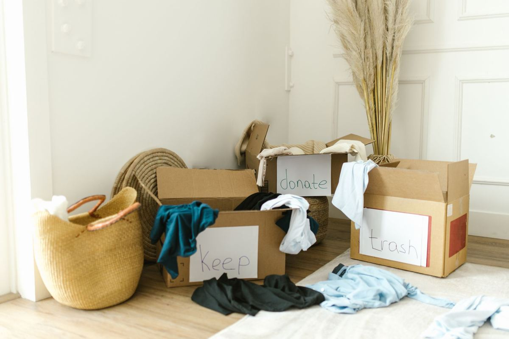

Half of what people call "junk" is just furniture that finished its job in one house. Dallas-Fort Worth has one of the strongest donation networks in the country, and using it well is the difference between a landfill run and a couch getting a second decade in someone's first apartment. Here is how to route it right.

The one-question sort
Before anything else, walk your pile with a single question: would I hand this to a neighbor without apologizing? Clean sofa, working dryer, complete dining set: yes, that is a donation. Ripped recliner, dead microwave, wobbly bookshelf held together by hope: no, that is disposal or recycling. Donation centers spend real money hauling away unusable drop-offs, so sorting honestly is itself a small act of charity.
Who takes what in DFW
Thrift store networks
Goodwill and Salvation Army locations across the metroplex take furniture, clothing, kitchenware, and working electronics. Salvation Army also runs scheduled donation pickups for larger furniture in much of DFW, usually booked a week or two out.
Habitat for Humanity ReStore
The under-appreciated gem for anyone mid-renovation: the Dallas Area Habitat ReStore and its neighbors take furniture, working appliances, cabinets, doors, light fixtures, and leftover building materials, and Habitat's national ReStore directory will find the location closest to you. That half-bundle of flooring from the project you finished differently has a home here.
Local shelters and family services
Women's shelters, refugee resettlement programs, and furniture banks across Dallas and Tarrant County often need beds (frames, not used mattresses), dressers, and kitchen tables more than thrift stores do, and many will tell you exactly what they are short on this month if you call.
The fast lane: donation-first hauling
If the timeline is "this weekend" or the load is mixed keep-donate-dump, a donation-first junk removal crew collapses the whole process into one trip: we sort donatables out of the load, deliver them to local partners, recycle the metal and cardboard, and dispose of only what nothing else can absorb. That is the standard on every furniture pickup and estate cleanout we run.
What donation centers will refuse
- Stained, torn, or pet-damaged upholstery. If it needs a slipcover to be presentable, it will be declined.
- Mattresses and box springs. Almost universally refused for hygiene rules. These route to recycling or disposal.
- CRT and rear-projection TVs. No resale market, so they go through e-waste recycling instead, and the EPA keeps a plain rundown of the options.
- Cribs and car seats. Safety recall liability means most centers refuse them on sight.
- Anything broken. "Someone could fix this" is how donation centers drown. If it does not work today, it is not a donation.
Clothing and linens run on the same rules as furniture, and they are the part of a house that takes longest to sort. Closets, clothes and soft goods in a cleanout covers the three piles and where worn-out textiles actually go.
Receipts, quickly: the charity gives you a receipt listing what you donated, and you assign fair-market value for your own tax records. When Hero’s donates items from your job, we pass the receipt back on request; families handling estates use this constantly.
Frequently asked questions
What furniture do DFW donation centers accept?
Clean, intact, working items. The neighbor test rarely misses: if you would hand it over without apologizing, they will usually take it.
What do donation centers refuse?
Damaged upholstery, mattresses, CRT TVs, cribs, car seats, and anything broken. Those route to recycling or disposal instead. Getting a piece out of an upstairs bedroom is its own problem, and old furniture removal covers the stairwell side of it.
Do DFW charities pick up furniture donations?
Several run pickup trucks, typically scheduled one to two weeks out for resellable items. For faster or mixed loads, donation-first hauling does it in one trip.
How do donation receipts work?
The charity documents what was given; you assign the value. We forward receipts from Hero’s jobs on request.
Related reading: where your junk actually goes after pickup, How junk removal works in DFW and the garage cleanout checklist, where the donate pile usually gets discovered. Clearing a family home? Start with the estate cleanout checklist. Moving soon? What to haul instead of moving covers what to cut before the truck arrives.